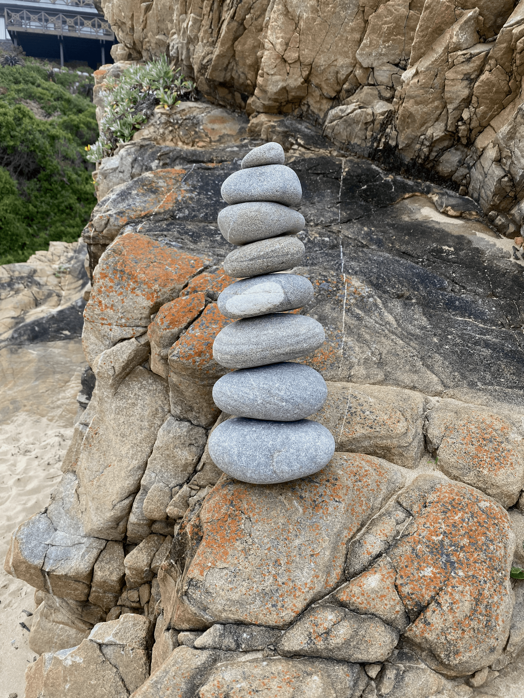

Shall I sit on the porch,
or lie on the bed, book in hand;
it makes little difference,
for the sea is turquoise and white beyond the pages,
no matter where I, with heavy eyes, settle down –
yet I am still just a thought away
from everything and everyone that fills my days
with endless demands for choices and deliberations;
but now, as the crashing of waves on rock and sand
fills the void that this idleness leaves,
and while word and verse cradle me softly to rest
in the inevitability of what is, and was, and will be,
from now to all eternity,
Amen.